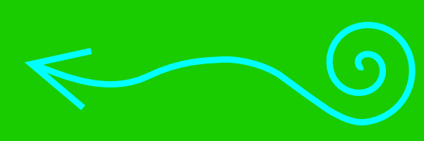

Plovárna
Semestrální práce do předmětu Y36MVR, zimní semestr 2009, cvičení pátek 9:15, tým 3
Technická specifikace - Tobogán
Autor: Daniel Kavan
Popis LOD
Model obsahuje 4 úrovně detailů.
- < 40 m
- Při vzdálenosti do 40m se zobrazuje model nejvyšší kvality s texturami.
- 40 - 70 m
- Model zjednodušen:
- Textury jsou nahrazeny barvami.
- Uzel Extrusion, ktery tvori skluzavku je vymodelovan jen 4 bodovou základnou provedenou po původní trajektorii a bez zahlazení.
- Věž místo IndexFaceSetu tvoří jen kvádr
- 70 - 120 m
- Nejniží kvalita modelu, kde je ještě model viditelný
- Extrusion ze skluzavky je nahrazen 2 rozměrným tvarem na Billboardu.
- Věž jen kvádr
- > 120 m
- Model je nahrazen prázdným uzlem Group {}.
Parametry prototypu
PROTO TOBOGAN [ exposedField SFColor barvatela .5 .5 .5 # barva tela skluzavky (RGB) exposedField SFColor barvasvetla .5 .5 .5 # barva svetla pri priblizeni (RGB) exposedField SFInt32 useLOD 1 # 1 = zapnout LOD, 0 = bez LODu exposedField MFString frontTexture "models/kavanda1-tobogan/sipka.png" # textura na predni stranu eventIn SFBool lightsOn # svetla z venku eventOut SFBool isActive # zapnuty vypinac eventIn SFTime externalTouch # ovladani z venku ]
Geometrie
Dle úrovně detailů počítá model (od nejdetailnějšího k nejméně detailnímu):
- 698 trojúhelníků
- 331 trojúhelníků
- 29 trojúhelníků
- 0 trojúhelníků
Textury
| Jméno textury | Náhled | Velikost | Rozměry | Poznámka |
|---|---|---|---|---|
| Střecha | 4 kB | 24 x 26 (624 px) |
Textura na střechu pro vytvoření dojmu tašek. | |
| Šipka |  |
15 kB | 600 x 200 (120 kpx) |
Dekorace vnější stěny se symbolem šipky. |
| Šipka2 |  | 14 kB | 600 x 200 (120 kpx) |
Alternativní dekorace vnější stěny se symbolem šipky. |
| Vlajka | 17 kB | 300 x 200 (60 kpx) |
Dekorace vlajky. |
Zvuky
| Jméno zvuku | Link | Velikost | Délka | Poznámka |
|---|---|---|---|---|
| Hvizd | whistle.wav | 14 kB | 1s | Zvuk doprovázející začátek pohybu výtahu. |
Skripty
Popis:- Skript Ovladani reaguje na vnější podněty, přijímá externí eventIny externalTouch a lightsOn pro vypnutí animací z venku (popř. zhasnutí z venku).
- Každá instance vytvořená z prototypu má vlastní hlavní vypínač ("detonation box"), který funguje jako externalTouch s omezením na jedinou instanci.
- Detonation box (tj. lokální switch) na sebe upozorňuje pomocí pulzující změny velikosti. Při vypnutí modelu se také zastaví na určité pozici a po zapnutí se pokračuje v animaci ze zastavené pozice.
- Inteligentní chování:
- Po vypnutí přestnou být aktivní manipulátory, po zapnutí jsou opět povoleny. Stejně tak je vypnuto ovládání výtahu.
- Při vypnutí (ať už přes globální nebo lokální) se zaství všechny animace a zvuky, pro zapnutí pokračují odtud, kde naposledy skončily.
DEF Ovladani Script {
field SFBool allEnabled TRUE # datova pole
field SFTime chodStartTime 0
field SFTime chodStopTime 0
field SFTime vytahStartTime 0
field SFTime vytahStopTime 0
field SFBool turnOffSensorEnabled TRUE
field SFBool turnOnSensorEnabled FALSE
field SFBool vytahEnabled TRUE
field SFBool vlajkaEnabled TRUE
field SFBool strechaEnabled TRUE
eventOut SFBool set_vlajkaEnabled #vystupy
eventOut SFBool set_strechaEnabled
eventOut SFBool set_vytahEnabled
eventOut SFBool set_turnOffSensorEnabled
eventOut SFBool set_turnOnSensorEnabled
eventOut SFTime chodStopped_changed
eventOut SFTime chodStarted_changed
eventOut SFTime vytahStopped_changed
eventOut SFTime vytahStarted_changed
eventOut SFTime vytahStartTime_resumed
eventOut SFBool lightsOn_changed
eventOut SFBool proximitySensorEnabled_changed
eventIn SFTime touchTime #vstupy
eventIn SFTime externalTouch IS externalTouch
eventIn SFTime ulozZacatek
eventIn SFBool lightsOn IS lightsOn
eventOut SFTime vypnout #predpokladam je na ovladani pres externalTouch
eventOut SFTime zapnout
url "javascript:
function initialize() {
chodStarted_changed = chodStartTime;
chodStopped_changed = -1;
}
function externalTouch(time) {
touchTime(time);
}
function lightsOn(on){
if (on) {
//svetla rozsvitit
lightsOn_changed = true;
proximitySensorEnabled_changed = false; //kdyz svitime, tak uz prox nic nedela
} else {
lightsOn_changed = false;
proximitySensorEnabled_changed = true; //kdyz nesvitime, tak se rozsvecuje tak, jak ma..
}
}
function touchTime(time) {
//omezeni vytahu
vytahEnabled = !vytahEnabled;
set_vytahEnabled = vytahEnabled;
if(allEnabled) { //vypiname
vypnout = time; //vrati time, kdy vypnout
turnOnSensorEnabled = true; //je zapnuto, tak vypiname a senzor pro zapnuti je ok, pro vypnuti dame neaktivni
turnOffSensorEnabled = false;
allEnabled = false;
vlajkaEnabled = false;
strechaEnabled = false;
chodStopTime = time;
chodStarted_changed = -1;
chodStopped_changed = time;
vytahStopTime = time;
vytahStarted_changed = -1;
vytahStopped_changed = time;
} else {
zapnout = time; //zapiname
turnOnSensorEnabled = false;
turnOffSensorEnabled = true;
allEnabled = true;
vlajkaEnabled = true;
strechaEnabled = true;
chodStartTime = chodStartTime + (time - chodStopTime);
chodStarted_changed = chodStartTime;
chodStopped_changed = -1;
vytahStartTime = vytahStartTime + (time - vytahStopTime);
vytahStarted_changed = vytahStartTime;
vytahStopped_changed = -1;
}
set_turnOffSensorEnabled = turnOffSensorEnabled; //prepneme touchsensory na mainswitchi.
set_turnOnSensorEnabled = turnOnSensorEnabled;
set_vlajkaEnabled = vlajkaEnabled;
set_strechaEnabled = strechaEnabled;
}
function ulozZacatek(time) {
if(allEnabled) { //jen pri resumovani
vytahStartTime = time;
vytahStartTime_resumed = time;
}
}
"
}